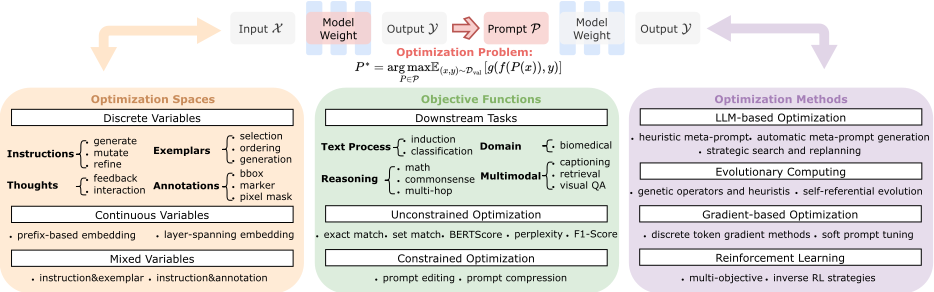
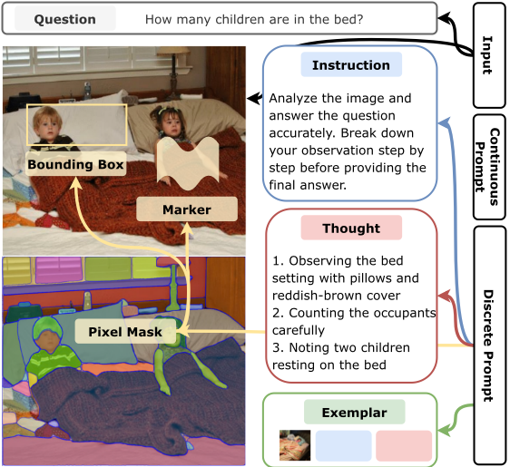
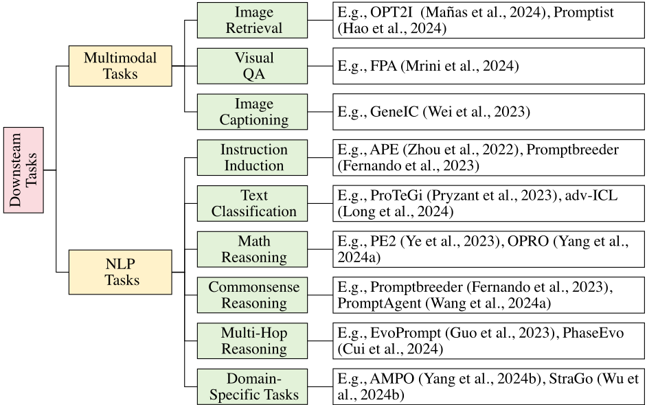
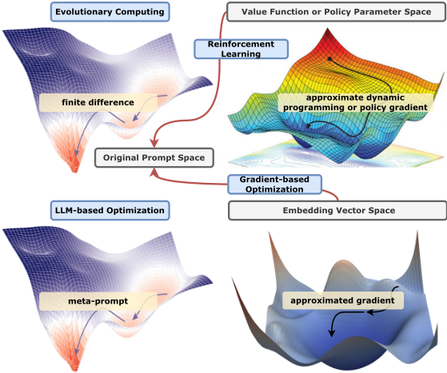

自动提示工程综述：优化视角
该综述针对手工提示工程在专家依赖、输入格式敏感与静态设计上的局限，以及现有综述按模态与方法割裂的问题，提出首个以优化理论统一视角贯穿文本、视觉与多模态的自动提示工程综述。方法上，论文将提示优化形式化为在离散、连续与混合提示空间上的最大化问题，按优化变量（指令、思维链、few-shot 示例、软提示）、目标函数与计算框架建立系统分类，并归纳 FM-based、进化计算、梯度优化与强化学习四大范式，覆盖 OPRO、PromptAgent、EvoPrompt、Promptbreeder、RLPrompt 等代表工作。关键结论是：该统一框架既解释了现有方法的有效性，也指出约束优化、多任务、在线与多目标优化、面向多轮 Agent 的提示设计等开放前沿。对团队而言，这是提示工程能力域的系统方法论地图，可直接指导提示自动优化的选型与提示词资产管理。
手工提示工程存在三重根本局限：专家依赖（需反复试错）、输入格式敏感（微小句法变化如标点或措辞改动即导致性能波动）、静态设计无法适应演化中的输入分布；在多模态系统中还需解决跨模态对齐难题。同时，现有综述按模态与方法论割裂，缺乏跨离散、连续与混合提示空间的统一理论框架来系统组织提示组件、目标与优化策略。
提出统一的优化理论框架：将提示优化形式化为黑盒基础模型 f 在验证集 D_val 上最大化性能度量 g(f(P(x)),y) 的优化问题，按提示空间划分为三个子问题——离散提示优化 DPO（指令、思维链、few-shot 示例、视觉标注等人类可读元素）、连续提示优化 CPO（soft prompt 可训练向量）、混合提示优化 HPO。目标函数按下游任务（指令归纳、文本分类、数学/常识/多跳推理、领域任务、多模态任务）实例化，并讨论带约束目标（如提示简洁性）。优化方法归纳为四大范式：(1) FM-based 优化（启发式元提示如 PE2/OPRO、自动元提示生成如 ProTeGi/CriSPO、MCTS 等策略搜索如 PromptAgent）；(2) 进化计算（遗传算子、FM 作为演化算子的 EvoPrompt/Promptbreeder）；(3) 梯度优化（离散 token 的近似梯度方法与 soft prompt tuning 如 Prefix-tuning/P-Tuning）；(4) 强化学习（将提示编辑建模为 RL 动作，如 RLPrompt/TEMPERA，及多目标与逆 RL 变体）。
未在论文中说明（该文为综述，正文未报告自身的量化实验结果）
区别于以往聚焦单一任务、提示类型或效率（如提示压缩）的综述，本文首次以统一优化理论视角贯穿文本、视觉与多模态的自动提示工程：将离散/连续/混合提示空间、优化变量类型、目标函数与四大计算范式纳入同一二维分类体系（优化变量 × 优化方法），并系统指出约束优化、多任务、在线、多目标、双层优化与面向 Agent 的提示设计等开放前沿。
相关度级别：high
命中能力域：3.2 提示工程
理由：直接命中能力域 3.2 提示工程的核心技术：自动提示优化正是论文主题，覆盖指令的生成/变异/精化、CoT 思维链的反馈式优化、few-shot 示例的选择与排序、提示约束（简洁性/可读性）等，均为团队'提示的设计与优化'与'提示词资产管理与复用'的直接方法论来源。FM-based 与进化类方法只需黑盒 LLM 调用即可实施，与团队'用好模型而非训练模型'的定位完全吻合；soft prompt 类方法则可作为需要更强适配时的备选。论文将面向多轮 Agent 的提示优化列为开放前沿，对 3.3 有启发但非正文实质内容，故不列为命中域。
建议动作：深入精读并做内部分享
arXiv:2502.11560v1 [cs.AI] 17 Feb 2025
自动提示工程综述：优化视角
Wenwu Li 1、Xiangfeng Wang 4,3、Wenhao Li ∗ 1 与 Bo Jin † 2,1
1 同济大学计算机科学与技术学院 2 同济大学上海智能自主系统研究院 3 华东师范大学计算机科学与技术学院 4 华东师范大学教育部数学与工程应用重点实验室（MoE）
基础模型的兴起使研究焦点从资源密集型的微调转向提示工程，这是一种通过输入设计而非权重更新来引导模型行为的范式。尽管人工提示工程在可扩展性、适应性和跨模态对齐方面存在局限，但自动化方法——涵盖基于基础模型（FM）的优化、进化方法、基于梯度的优化以及强化学习——提供了富有前景的解决方案。然而，现有综述在模态和方法论层面仍较为零散。本文通过统一的优化理论视角，首次对自动提示工程进行了全面综述。我们将提示优化形式化为离散、连续和混合提示空间上的最大化问题，并依据优化变量（指令、软提示、示例）、任务特定目标和计算框架对各类方法进行系统组织。通过在文本、视觉和多模态领域中将理论形式化与实际实现相衔接，本综述为研究人员和从业者建立了一个基础性框架，同时指出了约束优化与面向智能体（Agent）的提示设计等尚待探索的前沿方向。
预训练基础模型（Foundation Models，FMs，例如大语言模型（LLMs）或视觉语言模型（VLMs））的变革性影响彻底改变了自然语言处理与视觉理解，使其在从数学推理到多智能体协作系统等复杂认知任务中展现出前所未有的能力 [XCG + 25]。随着模型规模攀升至数万亿参数，传统微调方法面临着难以逾越的计算壁垒。这种资源密集性从根本上限制了 FM 在现实应用中的部署，尤其是在边缘设备以及对时间敏感的场景中，例如自动驾驶车辆的决策或实时医疗诊断。
∗ whli@tongji.edu.cn
† bjin@tongji.edu.cn
目前已有若干面向效率的方法涌现，包括参数高效微调、模型蒸馏、稀疏训练和动态架构方法 [WWL + 24]。尽管这些方法在不同程度上降低了计算需求，但它们仍然依赖于参数更新，因而需要大量训练数据和反向传播机制。这在需要快速适应的场景中尤为受限——例如需要每小时更新模型的金融欺诈检测系统，或因患者数据隐私而禁止重新训练的医疗应用。提示工程（prompt engineering）通过一种范式转变规避了这些约束：它不修改神经权重，而是通过策略性的输入设计对 FM 行为进行重新编程 [SSS + 24, Ama24, VD24]。
人工提示工程已通过思维链（Chain-of-Thought，CoT）和少样本示例选择等技术展现出卓越的泛化能力 [AJSK24]。然而，其在实际中的采用面临根本性局限：1）依赖专家，需要费力的反复试错 [SSS + 24]；2）对输入格式敏感，微小的句法变化（例如标点符号改动或指令措辞调整）就会引起性能波动 [SCTS24]；3）静态设计无法适应不断演变的输入，例如社交媒体话语模式的转变 [ZMH + 22]。在多模态系统中，这些局限会进一步加剧，因为人工提示必须解决跨模态对齐的挑战——例如，在视觉语言模型（VLMs）中确保视觉定位（visual grounding）的准确性，需要图像区域描述符与文本查询之间的精确协调，而人类往往无法正确对齐二者 [GHC + 23]。
自动提示优化通过对组合提示空间的系统性探索来应对这些局限，所用方法包括：借助遗传操作对词元（token）序列进行变异的进化策略、将提示视为可微分策略的强化学习（RL），以及通过基于梯度的超参数优化来适配提示的元学习方法。至关重要的是，这些方法展现出了超越人类设计的涌现能力，例如自动发现能够平衡多个目标的提示 [MRK25]，或在机器人控制系统中根据实时反馈进行自适应重配置 [MLW + 24]。
现有综述在方法论与模态边界上仍较为零散。尽管一些奠基性工作建立了基于提示的学习理论 [LYF + 23] 以及多模态应用 [GHC + 23]，但专门的综述仅聚焦于压缩技术 [LLSC24] 或人工设计模式 [SSS + 24, Ama24, VD24]。虽然 [CXW + 24] 讨论了效率方面的问题，但目前尚无针对跨模态自动提示工程的全面论述。

我们的工作建立了首个面向跨模态自动提示工程的统一优化理论框架（图 1）。我们将该问题形式化为在离散、连续和混合提示空间上最大化期望性能指标的问题（第 3 节），其中不同类型的变量（硬指令、软提示、少样本示例和混合变量）对应于特定的优化子问题。本综述通过这一视角对现有方法进行系统组织：（1）优化空间（第 4 节）对文本、视觉和多模态领域中的提示元素进行分类；（2）目标函数（第 5 节）通过性能指标与约束的数学实例化来刻画各类任务；（3）优化方法（第 6 节）将各类技术归入代表性的计算范式（基于 FM 的方法、进化方法、基于梯度的方法和 RL 方法）。这一统一视角不仅有助于解释现有方法的有效性，还为开发更为复杂的自动提示工程算法奠定了严谨的基础，在弥合理论理解与实际实现之间差距的同时，指出了尚未得到充分探索的研究前沿。
2
提示工程作为一种增强基础模型（FM）在多样任务上能力的重要方法，已迅速获得广泛重视。多篇综述通过考察基于提示的学习的特定侧面，为该领域做出了贡献。例如，[LYF + 23] 将提示工程置于自然语言处理（NLP）这一更宏观的背景之中，强调文本提示与传统监督训练之间的差异。类似地，[VD24] 与 [SSS + 24] 分别对提示方法（从精心雕琢的自然语言指令到学习得到的向量）进行了全面概述，并详细介绍了它们在各类 NLP 基准测试（benchmark）上的表现。与此同时，[Ama24] 探讨了思维链（CoT）与反思（Reflection）等更为先进的基于提示的机制，并考察了 LangChain 与 Semantic Kernel 等工具包。
在这些基础性综述之外，还涌现出面向特定领域和特定技术的工作。[LLSC24] 聚焦于提示压缩方法，同时探索硬（hard）与软（soft）两类途径，并阐明了压缩如何在不牺牲准确率的前提下精简模型性能。[GHC + 23] 将这些思想扩展到视觉-语言模型，区分了多模态到文本生成、图像-文本匹配与文本到图像生成。他们研究了多模态场景中的提示策略与纯文本场景相比存在何种差异。由此，这些综述共同描绘出一幅不断扩展的研究图景，涵盖多种模型类型、任务形式以及优化方面的考量。
然而，尽管这些工作各自颇具价值，它们仍因方法论或模态上的边界而彼此割裂。[CXW + 24] 专门探讨了效率方面的问题，但目前尚无综合性资源将离散、连续与混合提示空间的理论基础加以统一。现有综述要么专注于基础理论 [LYF + 23, GHC + 23]，要么探讨诸如压缩这类界定狭窄的技术 [LLSC24]，要么聚焦于手工设计模式 [SSS + 24, VD24]。这种条块分割式的局面使得如何在统一的理论框架下系统地组织提示组件、目标与优化策略等问题仍悬而未决。
我们的综述通过引入一种统一的优化理论视角来弥合这一差距，该视角面向跨模态的自动提示工程。与以往聚焦于特定任务、提示类型或效率提升的工作不同，我们将提示工程表述为一个总体性的优化问题，旨在为离散（hard 与 exampler）、连续（soft）以及混合提示最大化任务特定的性能指标。我们的分类体系涵盖变量、目标函数和优化方法，阐明了最佳实践，并强调了未来研究中富有前景的方向。通过这一工作，我们为研究人员和从业者推进自动提示工程提供了严谨的基础，将现有研究的多样化脉络综合为一个单一而连贯的框架。
3
本文研究基础模型的提示优化问题，涵盖大语言模型（LLM）和视觉语言模型（VLM）。设 X 表示输入空间，Y 表示输出空间。对于 LLM，X 表示文本输入；而对于 VLM，X = X v ×X t 表示图像-文本对，其中 X v 表示视觉空间，X t 表示文本空间。提示函数 P : X → P 将输入查询映射到能够引发特定模型行为的条件化模式。提示空间 P 可以划分为三个子空间：离散提示空间 P d、连续提示空间 P c，以及混合提示空间 P h = P d ×P c。
对于 P ∈ P d，我们根据模型类型考虑不同的规范形式。在 LLM 中，零样本（zero-shot）形式表示为 P ( x ) = [ I, T ; x ]，其中 I, T ∈ V ∗ 分别表示来自词表空间 V 的可学习指令与思维序列，而 V ∗ 表示 V 上所有可能序列的集合。少样本（few-shot）形式为 P ( x ) = [ I, T, e 1 , . . . , e k ; x ]，其中 { e i ∈ E} k i =1 是来自空间 E 的 k 个可学习示例。每个示例 e i = ( x e i , y e i ) 由一个 I/O 对组成，其中 x e i ∈ X 且 y e i ∈ Y。
在 VLM 中，除了继承 LLM 的所有提示形式之外，空间标注形式采用一般表达式 P ( x ) = [ I, T, R 1 , . . . , R m ; x ]，其中 { R i ∈ R} m i =1 是来自通用区域空间 R 的空间区域。每个区域 R i = ( A i , l i ) 由一个区域规格 A i ∈ A 和一个标签 l i ∈ L 组成，其中 A 是一个通用的区域规格空间，能够表示多种形式，包括但不限于：1) 边界框：A i ∈ [0 , 1] 4 表示归一化坐标；2) 标记：A i ∈ [0 , 1] 3 表示中心坐标和半径；3) 像素掩码：A i ∈ { 0 , 1 } H × W 表示二值掩码；以及 4) 其他区域规格（例如多边形、曲线）。
对于 P ∈ P c，提示采用统一形式：
其中 e x = Embed( x ) ∈ R d 是输入 x 通过嵌入函数 Embed : X → R d 得到的嵌入表示，而 { θ i ∈ R d } m i =1 是 d 维嵌入空间中的 m 个可学习向量。对于 P ∈ P h，提示同时结合了离散与连续元素：
从而允许对离散区域和连续嵌入进行联合优化。
给定黑盒基础模型 f : P × X → Y 以及大小为 n val 的验证集 D val = { ( x i , y i ) } n val i =1，提示优化问题可以表述为：
其中 g : Y × Y → R 表示衡量模型预测相对于真实标签质量的性能指标。这一表述引出 3 个问题子类：
4
| Symbol | Space | Definition |
|---|---|---|
| x | X = X v ×X t | Input query (text or image-text pair) |
| y | Y | Output response |
| V | - | Vocabulary of tokens |
| I | V ∗ | Instruction sequence |
| T | V ∗ | Thought sequence |
| e i | E = X ×Y | Text exemplar (input-output pair) |
| R | - | General region space |
| A i | A | Area specification (box/marker/mask/etc.) |
| R i | R = A×L | Spatial region with label |
| θ i | R d | Learnable prompt vector |
| e x | R d | Input embedding |
| P | P = P d ∪P c | Prompt function |
| P d | P t d ×P v d | Discrete prompt space |
| P c | - | Continuous prompt space |
| P h | P d ×P c | Hybrid prompt space |
| f | P ×X →Y | Foundation model |
| g | Y ×Y → R | Performance metric |
| D val | ( X ×Y ) n val | Validation dataset of size n val |
| Symbol | Space | Definition |
其中 DPO、CPO 和 HPO 分别表示离散提示优化、连续提示优化和混合提示优化。所有情形的求解方法将在后续章节中讨论。
在第 3 节公式化表述的基础上，我们系统分析提示优化中的 3 种基本变量类型：离散（P d）、连续（P c）以及混合组合（P h）（图 2）。这一分类体系使得对跨模态自动化提示工程进行原则性分析成为可能。
离散提示优化在 P d 空间中进行，通过组合搜索来操作人类可解释的元素。我们识别出三种主要的变量子类型：
指令 指令变量（I ∈ V ∗）通过自然语言指示（例如“翻译成法语”）来指定任务目标。其优化的核心在于生成简洁而精确的指示，以激发出强大的模型性能。代表性方法通过受梯度启发的编辑、遗传算法（GA）或强化学习（RL）来生成 [HSYD23, YWL + 24, WLW + 24]、变异 [YWL + 24][GWG + 23] 或精炼 [SRLI + 20, PI + 23, GWG + 23, KHZ + 24, KKK + 24, DW + 22, HSY + 24] 指令，从而系统地提升任务准确率。这一分类还可以进一步扩展到多模态提示，代表性方法包括生成 [KSL + 23]、变异 [HCDW24, OS24] 或精炼 [MA + 24, YPO + 24, MLY + 24, WHS + 24, RLH23, MZB + 24]，它们在优化准确率以及确保生成图像质量的一致性方面发挥着关键作用。
5

思维 思维变量（T ∈ V ∗）通过中间推理步骤实现推理链。通过将大问题分解为更小的子问题，思维链（CoT）引导在自动生成或精炼时能够显著提升解答的正确性。这些方法增强了 CoT 推理的精确性与灵活性，使模型能够更好地处理复杂任务。代表性方法包括反馈 [PZ + 23, CAH + 24, CK + 24]，其利用自身或外部反馈来精炼推理；以及交互 [YZY + 23, MTG + 24]，其借助外部工具或资源来动态地验证和调整推理。
少样本示例 这些简短的输入-输出对（e i ⊂ E）展示与任务相关的行为，协助模型在最少监督下推断模式。示例优化技术可能涉及示例选择 [LSZ + 22, MSAD23, ZFT22] 或排序 [LBM + 22]，并且一些方法会自动生成新示例 [MSAD23] 以获得更好的性能。
标注 尽管边界框、标记和像素掩码在视觉-语言任务中被广泛用于视觉引导 [KMR + 23]，但就提示优化而言，这类提示仍然极其缺乏探索 [GHC + 23]。现有方法通常将编码后的图像表示（例如图像嵌入）视为“软”提示，利用软提示调优策略，而没有显式地利用人工制作的标注。仅有少量工作在人工提示工程中将标注作为额外的视觉线索引入 [PW + 23, DBB + 24]。
尽管指令、思维、示例和标注各自承担不同的角色，许多工作仍将它们的优化整合在一个共享框架中，旨在最大化离散提示的有效性，同时最小化人工投入。
6
与离散词元不同，连续（软）提示（P c）依赖于可学习的嵌入 θ i ⊂ R d。这些向量可以被附加到输入表示上，并通过基于梯度的方法进行优化。由于无需修改底层模型参数，软提示在适配时所需的资源更少。一些重要研究探索了基于前缀的 [LL21, LARC21, PWWF25, WC23] 或跨层嵌入 [LZ + 24]，结果表明，仅调优少量可训练向量即可获得显著的性能提升，同时保持模型的通用性。因此，软提示为个性化或特化基础模型提供了一条高效路径，而无需大规模微调或海量数据。
P h 空间中的混合（hybrid）设置同时包含离散与连续元素，将人类可读的指令或示例与可训练的嵌入向量相结合。这种融合既利用了离散 token 的可解释性和领域特异性，又利用了连续嵌入的灵活性。关于指令与示例协同优化的早期工作 [FBM + 23, WAC + 25, AD + 24, CZL + 24] 表明，联合精炼这些互补部分通常比单独优化每个组件能获得更稳健、更具适应性的行为。这种协同作用还可以扩展到多模态提示 [WJK + 24]，例如，通过将视觉语言模型（VLM）中的离散空间区域与连续的对齐向量相耦合，从而实现全面的端到端优化。
如第 3 节所述，我们的目标是求解
其中 f : P × X → Y 表示黑盒基础模型（LLM 或 VLM），P 是提示空间 P 中的一个提示（离散、连续或混合），g : Y × Y → R 是性能度量。下面我们说明 g ( · ) 在各下游任务中如何被实例化（第 5.1 节），随后讨论带约束的目标（第 5.2 节），所有内容均在公式 (3) 的框架内展开。
指令归纳（Instruction Induction）。该任务评估 f ( P ( x ) ) 提取并泛化底层指令的能力。依照 [HSBL22]，它涵盖 24 个子任务，例如形态句法变换和因果关系检测。典型的 g ( · ) 度量包括 BERTScore-F1 以及精确匹配/集合匹配。
文本分类（Text Classification）。模型将文本 x ∈ X 映射到离散标签 y ∈ Y。诸如 SST2 [SPW + 13]、SST-5 [SPW + 13] 和 AGNEWS [ZZL15] 等数据集涵盖情感分析、主题分类和主观性检测。常用的度量 g ( f ( P ( x )) , y ) 包括分类准确率和 Macro-F1。
数学推理（Math Reasoning）。此处 f ( P ( x ) ) 必须求解算术或代数应用题。诸如 GSM8K [CKB + 21]、MultiArith [KKRA + 16] 和 SingleEq [KKRA + 16] 等数据集的难度从单步算术到多步推理不等。评估依赖于对数值输出或困惑度（perplexity）的比较。
7

常识推理（Commonsense Reasoning）。模型必须结合外部的日常知识来回答问题或推断隐含的上下文。诸如 CommonsenseQA [THLB19] 和 StrategyQA [GKS + 21] 等任务评估 f ( P ( x ) ) 进行多步常识推理的能力。精确匹配是典型的性能度量。
多跳推理（Multi-Hop Reasoning）。多跳任务超越了单步推理，要求将来自多个来源的证据串联起来。BBH [SSS + 23] 是该领域的典型代表。其关键目标同样是基于正确性的 max E [ g ( · )]，但采用专门的中间步骤或思维链（CoT）评估。
领域特定任务（Domain-Specific Tasks）。聚焦于需要专家级知识的专门领域，例如 MedQA [JPO + 21] 和 MedMCQA [PUS22] 中的生物医学任务，其中 f ( P ( x ) ) 必须准确处理特定主题的查询。评估通常使用领域特定标签上的准确率或 Macro-F1。
多模态任务（Multimodal Tasks）。此处 X = X v ×X t 同时包含图像和文本。数据集 MS COCO [LMB + 14]、LAION [SBV + 22] 和 Celeb-A [LLWT15] 支持图像描述生成、检索和视觉问答。其目标涉及图文对齐、检索准确率、CLIP 或美学评分（Aesthetics Score）。
除了单纯地最大化任务特定指标之外，若干提示优化场景还需要额外的约束：
8
这些场景可以被视为式 (3) 在附加约束 Γ( P ) ≤ κ 下的特例，由此得到的解倾向于更简洁的提示或受控的编辑。通过将此类约束整合到优化流程中，自动化提示设计便超越了单纯的性能最大化，从而满足可用性、效率与对齐方面的要求。
为了建立连贯的组织结构，我们提出了一个统一的分类体系，并将优化方法划分为四大范式，如图 4 所示：（1）基于基础模型（FM）的优化，（2）进化计算，（3）基于梯度的优化，以及（4）强化学习。每种范式还可以根据其优化的是纯离散提示（ P ∈ P d ）、纯连续提示（ P ∈ P c ）还是混合提示（ P ∈ P h ）进一步细分。许多工作对这些类别进行了混合或扩展（例如，EvoPrompt 将基于 FM 的生成与遗传算法（GA）算子相结合）。通过将每项研究置于这一二维分类体系中，我们凸显了看似多样的算法之间共有的结构性原则，并为迅速扩展的文献提供了一个连贯的视角，如表 2 所示。

9
基于 FM 的优化方法直接利用 FM 作为元优化器来改进提示。这类方法通常采用迭代改进的方式，由 FM 根据性能反馈提出更新后的提示。
启发式元提示：若干方法借助人工设计的元提示（meta-prompt），即人工构建的、用于指示 FM 如何修订现有提示的序列。PE2 [YAPK23] 利用丰富的元描述、上下文规范以及思维链（CoT）模板，针对多种任务迭代地更新提示。OPRO [YWL + 24] 将解的探索与评估统一起来，在元提示中整合先前生成的解（及其质量指标），FM 利用该元提示来改进 P 的后续版本。LCP [LAX + 24] 将对比学习信号融入元提示，鼓励 FM 将高质量的 P d ∈ P d 与次优提示区分开来，并在不同模型家族/语言之间进行适配。类似地，StraGo [WGZ + 24] 将成功与失败的示例合并作为元上下文，以引导上下文学习（in-context learning）产生更鲁棒的提示。
自动元提示生成：另一类方法依靠外部反馈和自我反思来生成元提示。ProTeGi [PI + 23] 构建了一种迭代的“类梯度”文本编辑循环，结合束搜索与多臂老虎机策略来改进离散提示 P ∈ P d 。AutoHint [SLX + 23] 将由 FM 从先前预测错误中推断出的线索（hints）附加到提示中，从而以逐步的方式演化初始提示。CriSPO [HLX + 24] 引入“批评-建议”对来引导 FM 的反馈，从而在不修改模型权重的情况下改进文本生成提示；该方法还进一步提出了面向多目标提示工程的自动后缀调优（Automatic Suffix Tuning, AST）。同样，BPO [CL + 23] 通过收集针对中间输出的人类反馈，然后据此编辑 P，使 f ( P ( x )) 与用户意图对齐。
策略性搜索与重规划：少数工作引入了显式的搜索策略。APE [ZMH + 22] 通过由 FM 提出的候选池开展黑盒提示探索，在不依赖梯度的情况下选择能够最大化任务性能的提示。PromptAgent [WLW + 24] 利用蒙特卡洛树搜索（Monte Carlo Tree Search, MCTS）在专家级提示的组合空间中进行导航，并将用户反馈用作价值信号。AMPO [YWG + 24] 在失败与部分成功的引导下演化多分支提示；每个分支都对 P ( x ) 进行改进，以更好地处理日益复杂的任务变体。adv-ICL [LZBo24] 采用生成器-判别器（generator-discriminator）式的 FM 设置来探索对抗性提示，从而得到鲁棒的上下文示例。OPT2I [MA + 24] 关注文本到图像的一致性，通过重写文本提示 P d 来提升对齐效果。
演化方法将提示优化建模为一种遗传或演化过程。它们把提示 P ∈ P d 视为一个“有机体”，通过变异或交叉产生“后代”，适应度更高（即性能度量 g ( f ( P ( x )) , y )）的后代得以存活。这类方法特别适用于纯离散的提示空间。
遗传算子与启发式 GPS [XCDo22] 采用一种简单直接的遗传算法（GA）来改进少样本（few-shot）指令提示，迭代地对词元进行变异并保留表现最优的离散提示。LongPO [HSYD23] 通过引入束搜索（beam search）启发式和历史缓冲区，将这些思想扩展到长提示，以在多次变异之间保持上下文。GrIPS [PHZB23] 虽然并非严格意义上的 GA，但采用了类似的局部编辑机制，从父指令生成得到改进的子提示。PhaseEvo [CZL + 24] 进一步将指令优化与示例优化统一到一个多阶段生成流水线中，交替地精炼 I, T ∈ V ∗ 与示例集 { e i } k i =1 ⊆ E 。
10
| Method | Optimization Space | Variable Type | Optimization Methods | Optimization Strategy |
|---|---|---|---|---|
| PE2 [YAPK23] | Discrete | Instructions | FM-based Optimization | Heuristic Meta-Prompt |
| OPRO [YWL + 24] | Discrete | Instructions | FM-based Optimization | Heuristic Meta-Prompt |
| LCP [LAX + 24] | Discrete | Instructions | FM-based Optimization | Heuristic Meta-Prompt |
| StraGo [WGZ + 24] | Discrete | Instructions | FM-based Optimization | Heuristic Meta-Prompt |
| ProTeGi [PI + 23] | Discrete | Instructions | FM-based Optimization | Automatic Meta-Prompt Generation |
| AutoHint [SLX + 23] | Discrete | Instructions | FM-based Optimization | Automatic Meta-Prompt Generation |
| CriSPO [HLX + 24] | Discrete | Instructions | FM-based Optimization | Automatic Meta-Prompt Generation |
| BPO [CL + 23] | Discrete | Instructions | FM-based Optimization | Automatic Meta-Prompt Generation |
| APE [ZMH + 22] | Discrete | Instructions | FM-based Optimization | Strategic Search and Replanning |
| PromptAgent [WLW + 24] | Discrete | Instructions | FM-based Optimization | Strategic Search and Replanning |
| AMPO [YWG + 24] | Discrete | Instructions | FM-based Optimization | Strategic Search and Replanning |
| adv-ICL [LZBo24] | Discrete | Instructions | FM-based Optimization | Strategic Search and Replanning |
| OPT2I [MA + 24] | Discrete | Instructions | FM-based Optimization | Strategic Search and Replanning |
| GPS [XCDo22] | Discrete | Instructions | Evolutionary Computing | Genetic Operators and Heuristics |
| LongPO [HSYD23] | Discrete | Instructions | Evolutionary Computing | Genetic Operators and Heuristics |
| GrIPS [PHZB23] | Discrete | Instructions | Evolutionary Computing | Genetic Operators and Heuristics |
| EvoPrompt [GWG + 23] | Discrete | Instructions | Evolutionary Computing | Self-Referential Evolution |
| HPME [WJK + 24] | Discrete | Instructions | Gradient-Based Optimization | Discrete Token Gradient Methods |
| AutoPrompt [SRLI + 20] | Discrete | Instructions | Gradient-Based Optimization | Discrete Token Gradient Methods |
| ZOPO [HSY + 24] | Discrete | Instructions | Gradient-Based Optimization | Discrete Token Gradient Methods |
| RLPrompt [DW + 22] | Discrete | Instructions | Reinforcement Learning | Prompt Editing as RL Actions |
| TEMPERA [ZWZ + 22] | Discrete | Instructions | Reinforcement Learning | Prompt Editing as RL Actions |
| PRewrite [KHZ + 24] | Discrete | Instructions | Reinforcement Learning | Prompt Editing as RL Actions |
| PACE [DLo23] | Discrete | Instructions | Reinforcement Learning | Prompt Editing as RL Actions |
| StablePrompt [KKK + 24] | Discrete | Instructions | Reinforcement Learning | Prompt Editing as RL Actions |
| Evoke [HTZ + 23] | Discrete | Instructions | Reinforcement Learning | Prompt Editing as RL Actions |
| Prompt-OIRL [SHvdS23] | Discrete | Instructions | Reinforcement Learning | Multi-Objective and Inverse RL Strategies |
| MORL-Prompt [JMY + 24] | Discrete | Instructions | Reinforcement Learning | Multi-Objective and Inverse RL Strategies |
| MAPO [CWF + 23] | Discrete | Instructions | Reinforcement Learning | Multi-Objective and Inverse RL Strategies |
| Self-ask [PZ + 23] | Discrete | Thoughts | FM-based Optimization | Strategic Search and Replanning |
| Reprompt [CK + 24] | Discrete | Thoughts | FM-based Optimization | Strategic Search and Replanning |
| PROMST [CAH + 24] | Discrete | Thoughts | Evolutionary Computing | Self-Referential Evolution |
| ReAcT [YZY + 23] | Discrete | Thoughts | FM-based Optimization | Strategic Search and Replanning |
| Self-refine [MTG + 24] | Discrete | Thoughts | FM-based Optimization | Strategic Search and Replanning |
| KATE [LSZ + 22] | Discrete | Few-shot Examples | FM-based Optimization | Strategic Search and Replanning |
| AL [MSAD23] | Discrete | Few-shot Examples | FM-based Optimization | Strategic Search and Replanning |
| AES [ZFT22] | Discrete | Few-shot Examples | Reinforcement Learning | Prompt Editing as RL Actions |
| Ordered Prompt [LBM + 22] | Discrete | Few-shot Examples | FM-based Optimization | Strategic Search and Replanning |
| SA [KMR + 23] | Discrete | Annotations | FM-based Optimization | Automatic Meta-Prompt Generation |
| KOSMOS-2 [PW + 23] | Discrete | Annotations | FM-based Optimization | Automatic Meta-Prompt Generation |
| Visualcues [DBB + 24] | Discrete | Annotations | FM-based Optimization | Automatic Meta-Prompt Generation |
| Prefix-tuning [LL21] | Continuous | Soft Prompt | Gradient-Based Optimization | Soft Prompt Tuning |
| Prompt-Tuning [LARC21] | Continuous | Soft Prompt | Gradient-Based Optimization | Soft Prompt Tuning |
| P-Tuning [LZ + 24] | Continuous | Soft Prompt | Gradient-Based Optimization | Soft Prompt Tuning |
| PhaseEvo [CZL + 24] | Hybrid | Instructions and Exemplars | Evolutionary Computing | Genetic Operators and Heuristics |
| Promptbreeder [FBM + 23] | Hybrid | Instructions and Exemplars | Evolutionary Computing | Self-Referential Evolution |
| Mixture-of-Prompts [WAC + 25] | Hybrid | Instructions and Exemplars | FM-based Optimization | Automatic Meta-Prompt Generation |
| Promptwizard [AD + 24] | Hybrid | Instructions and Exemplars | FM-based Optimization | Automatic Meta-Prompt Generation |
| Method | Optimization Space | Variable Type | Optimization Methods | Optimization Strategy |
自指演化 另一些方法则利用 FM 本身作为演化算子。EvoPrompt [GWG + 23] 使用 FM 来提出候选变异，并将其与基于适应度的选择流程相结合。Promptbreeder [FBM + 23] 对任务提示与变异提示进行共同演化：后者是指定如何对父提示进行变异或交叉的指令。PROMST [CAH + 24] 专注于多步任务。它引入了人在回路（human-in-the-loop）的规则集和一个学习得到的启发式模型，将演化采样与用户反馈相结合，逐步改进文本提示。
11
基于梯度的策略源自经典优化原理，但在提示工程中面临独特的障碍，因为离散 token [ I, T, { e i } ] ∈ P d 不可直接求导。此类方法要么通过近似梯度在离散空间中进行搜索，要么——更为常见的是——在软提示上下文 P ∈ P c 中优化连续参数 θ ∈ R d 。
离散 Token 梯度方法 对于闭源 FM，通常无法直接获取梯度，因而需要替代方案：HPME [WJK + 24] 在每次迭代中将学习到的连续嵌入投影回离散 token，将软梯度更新与最近邻 token 匹配相融合。AutoPrompt [SRLI + 20] 在掩码语言建模场景中，通过添加能使朝向正确标签的梯度最大化的 token 来构建提示。ZOPO [HSY + 24] 在离散提示空间中实现零阶优化，通过在 token 域中采样局部扰动，并由神经正切核（neural tangent kernel）近似加以引导。
软提示调优 软提示方法将 P ∈ P c 视为一组可训练向量 { θ 1 , . . . , θ m }，这些向量与 x 的嵌入拼接，即 P ( e x ) = [ θ 1 , . . . , θ m ; e x ]。Prefix-tuning [LL21] 在语言模型的隐藏状态中附加可学习的前缀向量，仅需一小部分可训练参数。Prompt-Tuning [LARC21] 类似地在输入层添加可训练嵌入，并受益于大模型的可扩展性。P-Tuning [LZ + 24] 将可训练提示扩展到多个层，显著提升了少样本（few-shot）性能。所有这些方法求解的都是连续优化子问题 max P ∈P c E ( x,y ) ∼D val [ g ( f ( P ( e x )) , y )] 的变体，因此可以利用关于 θ i ∈ R d 的标准梯度下降。
强化学习（RL）方法将提示设计重新表述为一个 RL 问题，其中 P ∈ P（通常为 P d 或 P h）在由 g ( f ( P ( x )) , y ) 定义的奖励下通过一系列动作进行更新。在这些 RL 方法中，关键思想是将优化目标 max P ∈P E ( x,y ) ∼D val [ g ( f ( P ( x )) , y )] 表述为马尔可夫决策过程（MDP），其中部分或反复的提示编辑构成动作，而 g 既可以直接充当奖励函数，也可以作为学习得到的代理（proxy）的一部分。此类框架统一了离散提示编辑（P ∈ P d）与连续提示自适应（P ∈ P c），甚至允许混合形式 P ∈ P h，其中一些组件是可微的（软提示，soft prompts），而另一些则保持离散（硬指令，hard instructions）。
将提示编辑作为 RL 动作 RLPrompt [DW + 22] 将离散词元 v ∈ V 表示为 RL 动作，利用策略梯度方法探索文本提示空间。TEMPERA [ZWZ + 22] 提出在测试时进行基于 RL 的编辑，自适应地调整每个查询的提示。PRewrite [KHZ + 24] 利用 RL 信号训练一个独立的提示重写器，以最大化下游任务准确率。沿着类似的思路，PACE [DLo23] 通过迭代式 RL 反馈来改进次优的人工提示（P human），而 StablePrompt [KKK + 24] 采用近端策略优化（PPO）来缓解训练不稳定问题。Evoke [HTZ + 23] 建立了审阅者-作者循环，将提示输出馈入一个评论家（critic），由其提出增量式编辑建议。
多目标与逆强化学习策略 其他 RL 方法处理多目标或部分反馈场景。Prompt-OIRL [SHvdS23] 采用离线逆强化学习来学习查询特定的奖励模型，从而无需频繁的 FM 交互即可选出最优提示。
12
MORL-Prompt [JMY + 24] 通过适配多目标 RL 技术来应对相互冲突的奖励函数（例如风格与准确率之间的冲突）。MAPO [CWF + 23] 在一个模型自适应的提示优化器中将监督微调与 RL 相结合，针对每个目标 FM 定制 P，在多种下游任务上展现出显著提升。
从应用优化的视角对基础模型（FM）的提示优化开展系统性研究，蕴含着广阔的机遇，但目前仍缺乏深入探索。下面，我们概述若干关键研究主题，重点介绍当前进展、关键问题与开放性挑战。
约束优化 现有方法很少在离散提示空间中纳入语义或伦理约束。主要问题在于构建一种能够兼顾人类价值对齐、资源边界与可读性的搜索机制，尤其是在高维符号领域中。另一个挑战是将这些约束形式化为易于处理的数学条件，用以引导搜索算法，同时不牺牲灵活性或语言质量。
多任务提示优化 这对于利用跨任务的共享结构至关重要。尽管一些工作提出采用因子化或稀疏表示来捕捉提示层面的相似性，但跨任务“提示相似性”的形式化定义仍然缺失。此外还可能出现负迁移，即针对某一任务的改进反而导致另一任务性能下降。该领域需要稳健的框架来对这些权衡加以规范化，从而增强泛化能力与自适应性。
在线提示优化 现有技术通常优先考虑离线场景。然而，用户意图可能随时间发生偏移，这就需要能够在非平稳环境中保持稳定性能（例如有界动态遗憾）的算法。对在线更新的依赖放大了高维提示空间中离散搜索的复杂度。此外，实时用户反馈回路会引入额外的不确定性，因而需要更先进的收敛性分析。
多目标提示优化 多目标提示优化旨在平衡诸如准确率与可解释性等常常相互冲突的目标。许多现有研究采用单一指标优化，忽视了根本性的以人为中心的偏好。一个有前景的方向是引入基于 Pareto 的方法或多准则决策，并辅以偏好空间的几何表示。博弈论技术也有助于在相互冲突的目标之间进行仲裁，无论是在用户群体内部还是跨用户群体。
异构模态优化 尽管许多工作聚焦于文本线索，但计算机视觉及其他模态中的提示，例如边界框或像素级标注，仍远未得到充分探索。这要求更深入地理解跨模态耦合，以及各模态在何种条件下适合联合优化或分别优化。此类进展可能需要新颖的基于流形或基于图的工具来统一不同的提示表示。
13
双层提示优化 双层提示优化随着逐步“思维驱动”模型（如 OpenAI-o1、Deepseek-R1）的出现而产生，其中整条推理链都依赖于作为高层控制器的提示。这种分层结构给标准提示优化带来了挑战，因为微小的改动就可能剧烈改变推理轨迹。这些分层系统是否存在稳定均衡、对提示扰动有多敏感，目前仍是悬而未决的问题。借鉴多层优化的方法，有望同时厘清均衡的存在性条件与唯一性条件。
更广泛的应用场景 对于多轮 Agent，提示优化在序贯决策过程中展开，使非平稳性显著复杂化。在多智能体设计中引入博弈论元素，进一步凸显了协作式或竞争式均衡概念的重要性。类似地，垂直领域大模型（例如强化学习、AI4Science）会施加标准提示优化所未考虑的领域特定约束，这就需要专门的理论适配。
本综述勾勒了自动化提示工程的优化理论基础，超越了以往跨模态的碎片化处理方式。通过综合面向离散、连续和混合提示空间的方法，我们强调了指令、软提示（soft prompt）和示例（exemplar）等变量如何在统一的理论原则下得到系统优化。结合我们对任务目标的分类体系，以及对以基础模型（FM）为优化器的方法、进化计算方法、基于梯度的方法和强化学习（RL）驱动方法的统一视角，我们为理论探究与实际应用确立了关键基础。展望未来，多层次、多目标与在线优化的更紧密整合，对于塑造新兴基础模型的提示设计将至关重要。
14